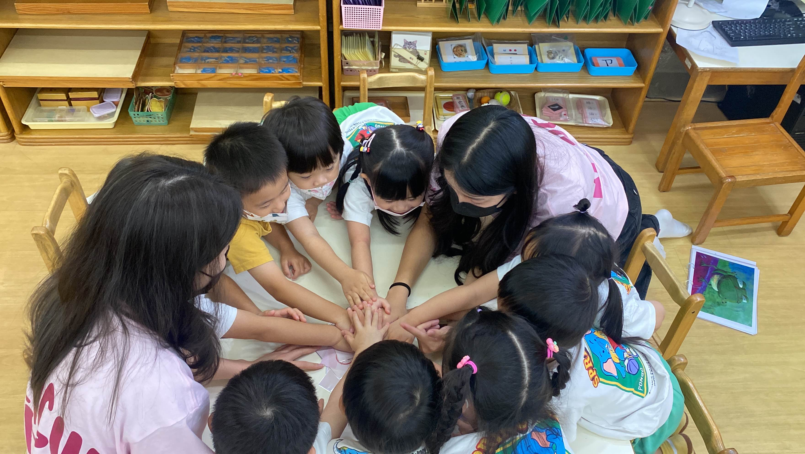

2024
Workshop
Dengue Fever
Youth Engagement Workshop — Dengue Fever & Synthetic Biology
In our 2024 team workshop, we focus on engaging youth in the fight against dengue fever through different interactive activities, such as bracelet-making, hands-on experiments, and games. And to further promote the topic, dengue fever, we also combine many teaching of synthetic biology.
By breaking down the complex biological concepts, we were able to let students of different ages understand how ATCG, DNA, genes, and cells work. We design the education of synthetic biology to not only spread the idea of synthetic biology, but also ignite the students' interest in synthetic biology.
Bracelet-making
Hands-on experiments
DNA & genes
Youth outreach
